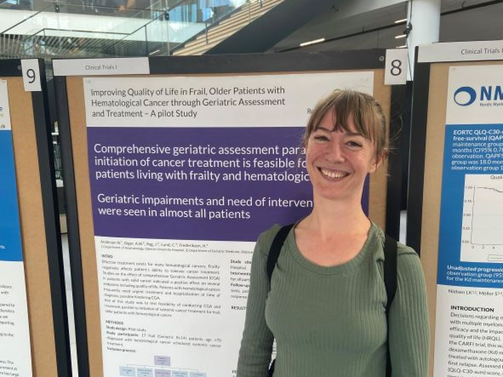
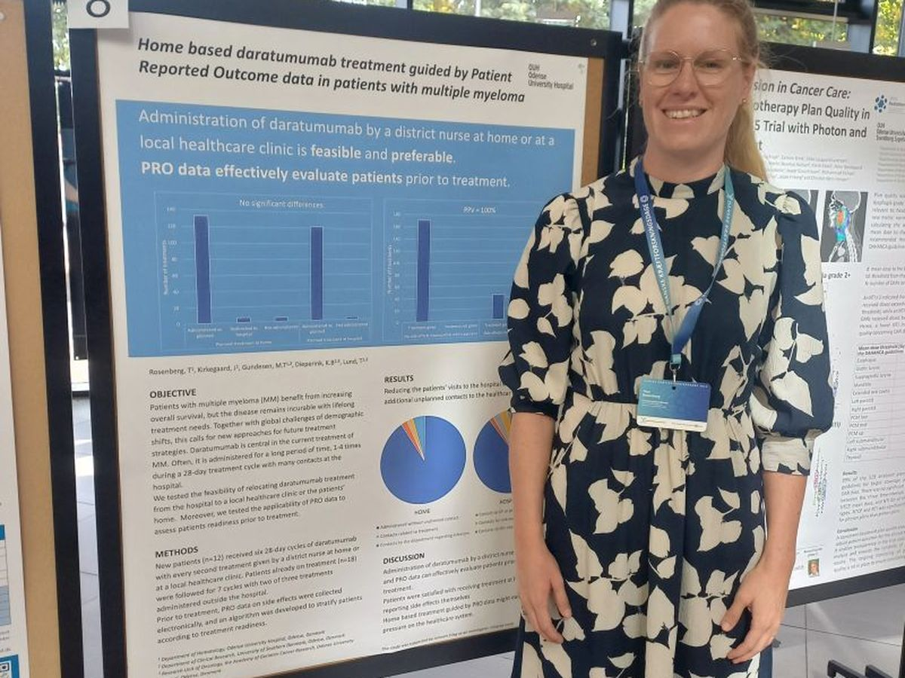

Nyheder
Møder, konferencer og præsentationer fra QoLRC.
-

SSQ-MM-valideringsstudiet præsenteret på ISOQOL 2026 i Prag
Helena Møgelbjerg Ditzel præsenterede en poster om den multinationale psykometriske validering af Steroid Symptom Questionnaire – Multiple Myeloma (SSQ-MM) hos patienter med immun trombocytopeni (ITP) og autoimmun hæmolytisk anæmi (AIHA) på den 33. årlige konference i International Society for Quality of Life Research (ISOQOL) i Prag. Studiet skal inkludere 180 patienter i Danmark, Norge, Sverige og Storbritannien og udvikler desuden en svensk version af spørgeskemaet.
-

Poster om geriatrisk vurdering af ældre patienter med hæmatologisk kræft
Nina Andersen præsenterede resultaterne af pilotstudiet om geriatrisk helbredsvurdering ved opstart af behandling hos ældre, skrøbelige patienter med hæmatologisk kræft. To do: Tilføj mødets navn og den korrekte dato.
-

Poster om hjemmebehandling med daratumumab styret af patientrapporterede oplysninger
Tine Rosenberg præsenterede resultater, der viser, at daratumumab kan gives i eget hjem eller i en lokal sundhedsklinik, og at patientrapporterede oplysninger kan bruges til at vurdere patienterne før behandling. To do: Tilføj mødets navn og den korrekte dato.